Airport Operations
Airport operations is responsible for coordinating the day-to-day activities of the airport. Operations staff monitor runways, taxiways, gates, terminals, parking areas, and other airport facilities to make sure everything is functioning properly. They coordinate with airlines, ground crews, maintenance personnel, security, and emergency services when problems occur. Airport operations personnel also respond to unexpected situations such as severe weather, aircraft incidents, equipment failures, and security concerns. They may coordinate the closure of a runway, redirect aircraft to another gate, or work with emergency responders during an incident. Because airports operate continuously, operations teams must constantly monitor what is happening throughout the facility.
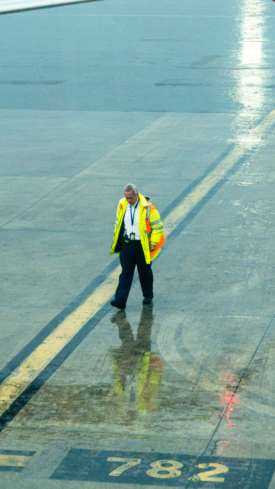
Air Traffic Control
Air traffic control (ATC) is responsible for safely managing aircraft movements in the air and on the ground. Air traffic controllers communicate with pilots and provide instructions about takeoffs, landings, taxiing, altitude, routes, and other aspects of flight. Their primary responsibility is maintaining safe separation between aircraft. Different controllers handle different portions of a flight. Tower controllers manage aircraft operating near the airport, including takeoffs, landings, and taxiing. Approach and departure controllers manage aircraft entering or leaving an airport's surrounding airspace. En-route controllers manage aircraft traveling between airports, often across large geographic areas. ATC requires constant communication, concentration, and coordination. Controllers must account for weather, aircraft performance, traffic volume, runway availability, and other factors when managing traffic. Their work is essential to preventing collisions and maintaining an orderly flow of aircraft.
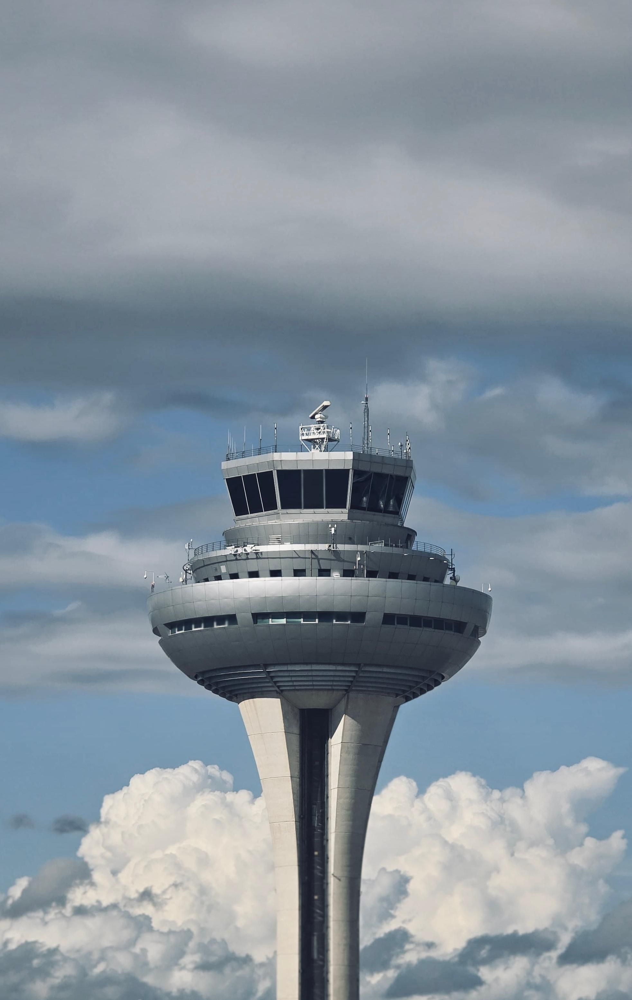
Airline Operations
Airlines have their own operational teams working within airports. Airline operations coordinates the activities necessary to prepare an aircraft and its passengers for departure. This includes scheduling flights, assigning gates, coordinating crews, managing aircraft turnaround times, and responding to delays or cancellations. A major part of airline operations occurs between an aircraft's arrival and its next departure. During this period, passengers may need to leave the aircraft, baggage must be unloaded and loaded, the aircraft is refueled, the cabin is cleaned, food and supplies may be restocked, and maintenance inspections may be performed. These activities must be carefully coordinated so the aircraft can depart safely and on schedule.
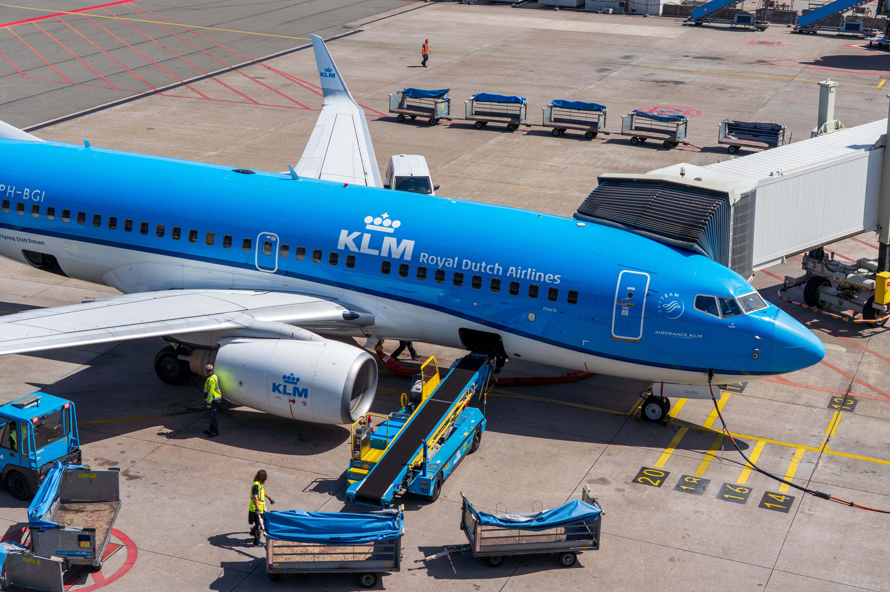
Ground Operations
Ground operations involves everything that happens around an aircraft while it is on the ground. Ground crews handle baggage, cargo, aircraft pushback, fueling, catering, cabin cleaning, and other services. Ramp agents work near aircraft and use specialized equipment such as baggage carts, belt loaders, cargo loaders, and aircraft tugs. Ground operations is particularly important because aircraft spend relatively little time on the ground compared with the amount of time they spend flying. Airlines want to turn aircraft around quickly, but employees must still complete every required safety procedure. Poor coordination on the ground can lead to delays that affect not only one flight but potentially many later flights.
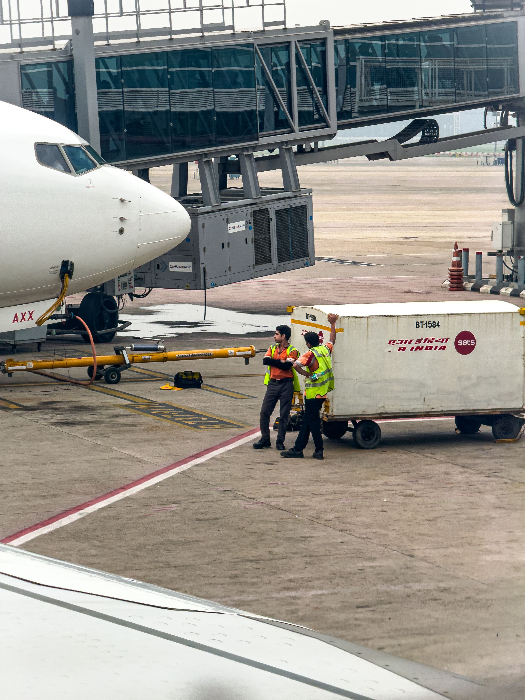
Airport Security
Airport security protects passengers, employees, aircraft, and airport facilities from security threats. Security can involve passenger screening, baggage screening, access control, surveillance systems, security checkpoints, and law enforcement. In the United States, the Transportation Security Administration (TSA) plays a major role in passenger and baggage screening at commercial airports. Airports also have restricted areas that are accessible only to authorized employees. Employees may need identification badges or other credentials to enter secure areas. Security personnel continuously monitor terminals and other facilities for suspicious activity while balancing security requirements with the need to keep passengers moving efficiently.
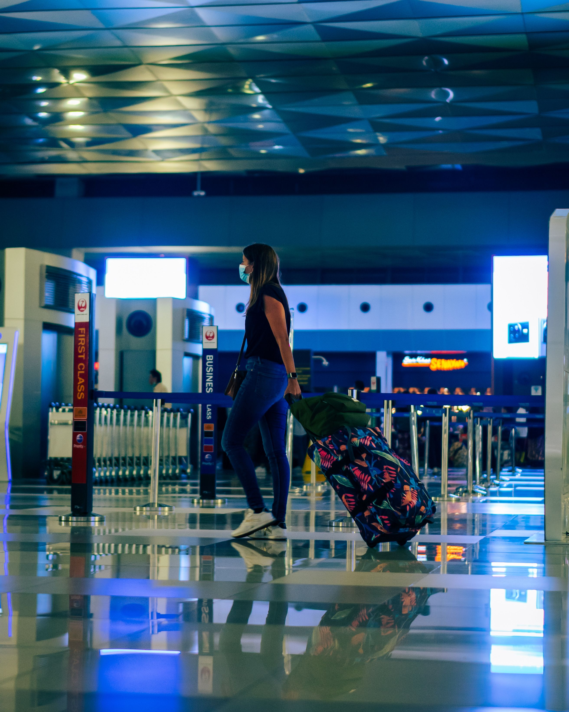
Information Technology
Modern airports rely heavily on information technology (IT). Computers and networks connect many of the systems that passengers and airport employees depend on, including flight information displays, check-in systems, baggage tracking, security equipment, communication systems, Wi-Fi, access-control systems, and airport databases. IT departments must keep these systems operational while protecting them from cyberattacks and technical failures. A network outage can affect check-in, boarding, baggage handling, airport communications, or flight information. IT professionals therefore work behind the scenes to maintain servers, networks, software, cybersecurity systems, and other technology used throughout the airport. Technology is also increasingly being used to improve the passenger experience. Mobile boarding passes, automated check-in kiosks, biometric identification, digital signage, and automated baggage systems can reduce wait times and make airport operations more efficient.
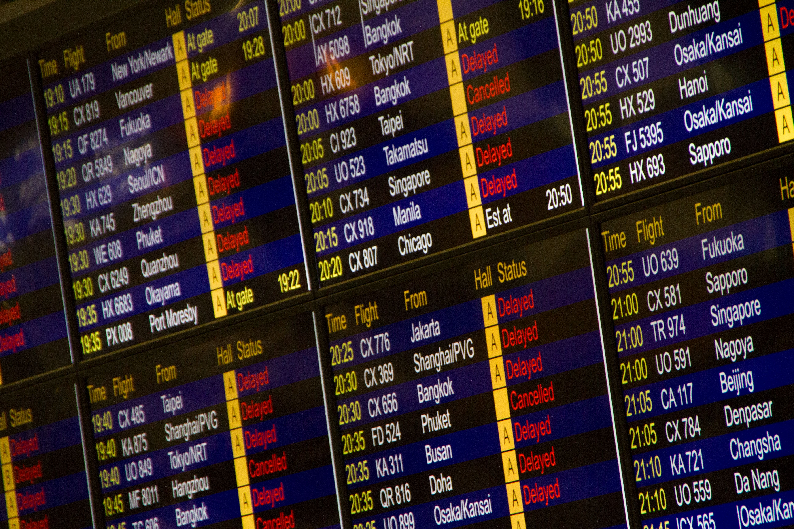
Maintenance and Engineering
Maintenance and engineering teams keep airport infrastructure and equipment in working condition. Their responsibilities can include maintaining buildings, electrical systems, plumbing, lighting, elevators, escalators, HVAC systems, roads, parking facilities, and other airport infrastructure. Airports also have specialized requirements for maintaining runways and taxiways. Crews inspect pavement, runway lights, signs, markings, and other equipment to ensure aircraft can operate safely. In areas that experience winter weather, maintenance teams may also need to remove snow and ice from runways and taxiways. Engineering departments are also involved in planning future improvements. When an airport wants to build a new terminal, expand a runway, or install new technology, engineers and project managers help design and oversee the project while minimizing disruptions to ongoing operations.
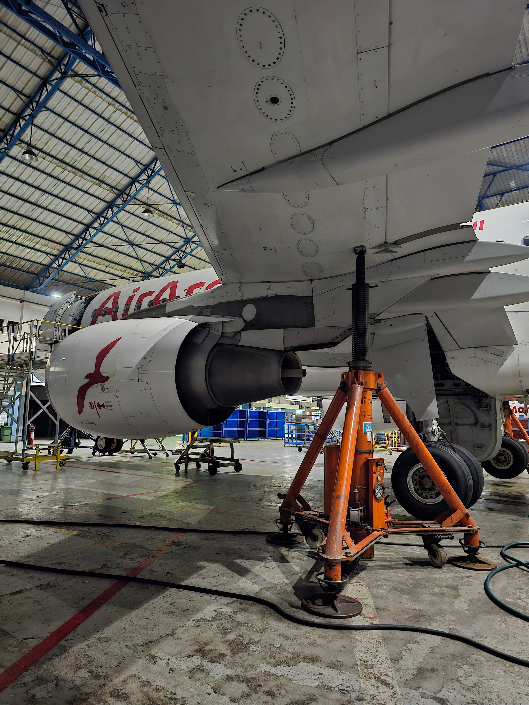
Emergency Services and Fire Rescue
Airports maintain specialized emergency response services because of the unique risks associated with aviation. Airport fire and rescue personnel are trained to respond to aircraft emergencies, fires, medical incidents, hazardous materials, and other situations. Airport rescue and firefighting crews must be able to reach an aircraft quickly in the event of an emergency. They work closely with local fire departments, police departments, medical services, and airport operations. Regular drills and emergency exercises help ensure that different organizations know how to work together during a serious incident.
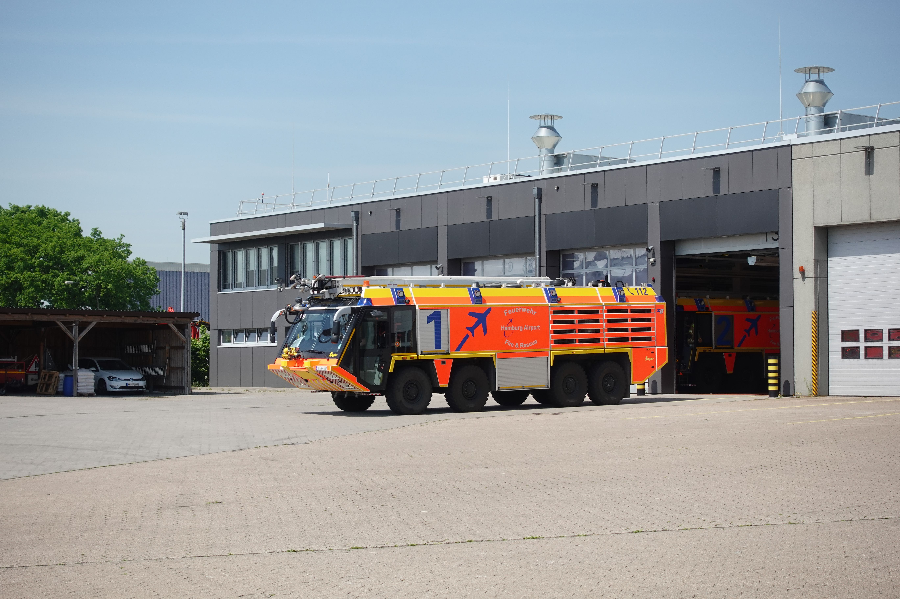
Customer Service and Passenger Experience
Customer service personnel help passengers navigate the airport and resolve problems. They may assist travelers with directions, flight information, accessibility services, lost property, ticketing questions, or other concerns. Larger airports may have information desks, passenger assistance programs, and dedicated customer service teams. Passenger experience has become an increasingly important part of airport management. Airports compete to provide comfortable and convenient experiences through improved seating, restaurants, shops, Wi-Fi, charging stations, lounges, efficient security checkpoints, and clear signage. A well-designed passenger experience can make an airport easier and less stressful to navigate.
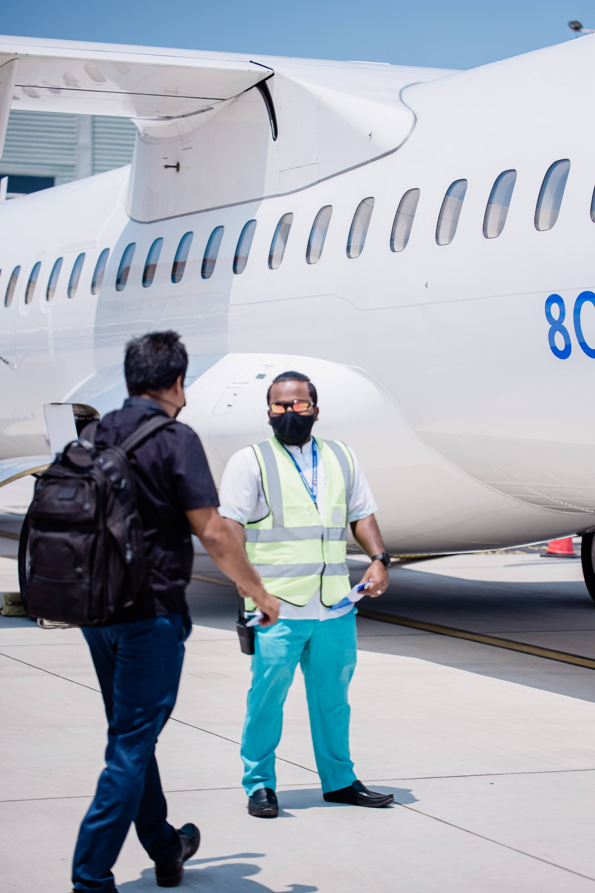
Marketing and Public Relations
Marketing departments promote the airport and encourage airlines, businesses, and travelers to use its facilities. Airport marketing can involve advertising, social media, websites, community outreach, tourism campaigns, and promotional events. One important goal of airport marketing is attracting new airline routes. Airport officials may work with airlines to demonstrate that there is sufficient demand for a new destination. An airport might promote the number of businesses, tourists, or residents in its service area to convince an airline that a new route could be successful. Public relations is another important responsibility. Airports communicate with the public and news organizations about major events, construction projects, flight disruptions, emergencies, and other issues. Maintaining a positive public image can be particularly important when an airport is undergoing expansion or dealing with disruptions.
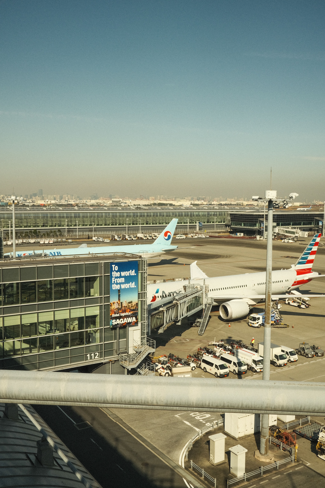
Finance and Administration
Airports are also large businesses that require financial and administrative departments. Finance teams manage budgets, expenses, contracts, revenue, and financial planning. Airports can generate revenue through airline fees, passenger-related fees, parking, rental cars, retail stores, restaurants, advertising, and other sources. Administrative personnel manage contracts, purchasing, human resources, legal matters, records, and relationships with airlines and other companies. Large airports may have hundreds or thousands of employees, making effective management and administration essential to keeping the organization operating smoothly.
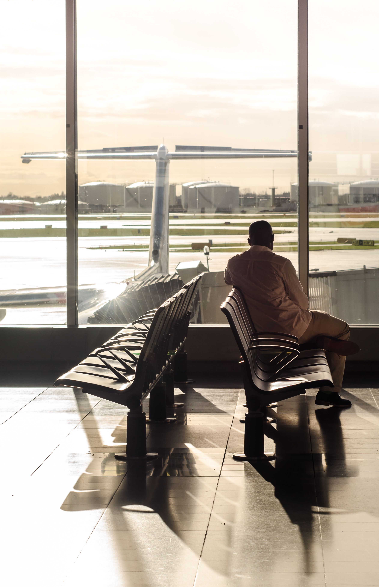
Cargo and Logistics
Not all aviation involves passengers. Air cargo operations transport products, mail, medical supplies, food, electronics, machinery, and other goods. Cargo facilities may include warehouses, loading areas, specialized storage, and equipment for moving freight between aircraft and ground transportation. Cargo operations require careful coordination between airlines, freight companies, customs officials, warehouse employees, truck drivers, and airport personnel. Because many products transported by air are time-sensitive or valuable, efficient cargo handling is an important part of the aviation industry.
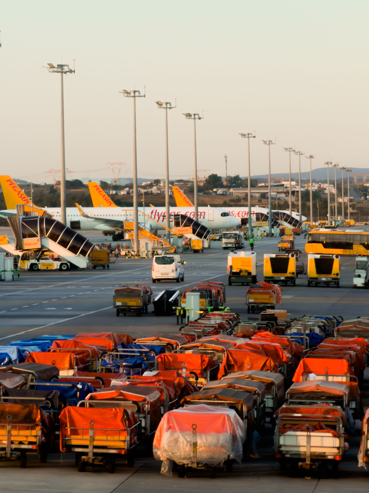
How It All Comes Together
The most important thing to understand about airport operations is that no single department can operate an airport by itself. A commercial flight requires coordination between dozens of different groups. Before an aircraft can depart, its flight crew must be ready, the aircraft must be maintained and fueled, passengers must check in and pass through security, baggage must be loaded, a gate must be available, ground crews must prepare the aircraft, and air traffic control must coordinate its movement. When everything works correctly, passengers may only see the final result: boarding an aircraft and taking off. Behind that simple experience, however, are hundreds of employees and numerous interconnected systems working together. Airport operations, air traffic control, security, IT, maintenance, customer service, marketing, finance, and many other departments all contribute to making modern aviation possible.
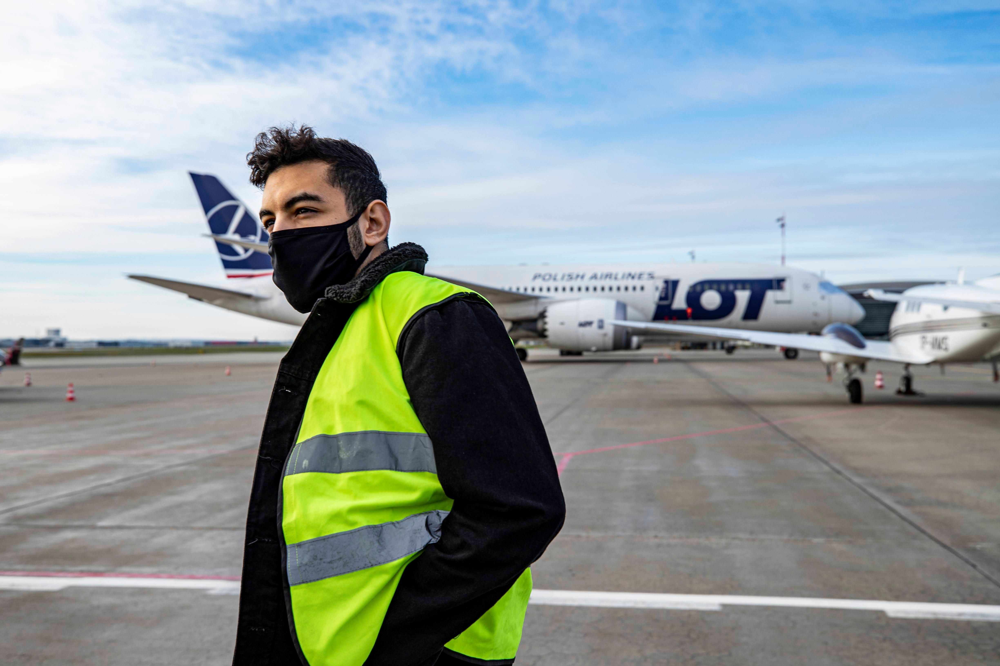